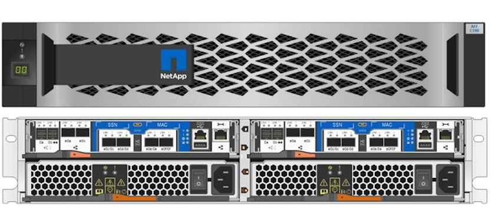
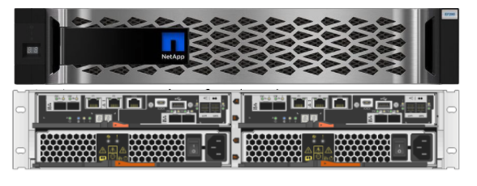
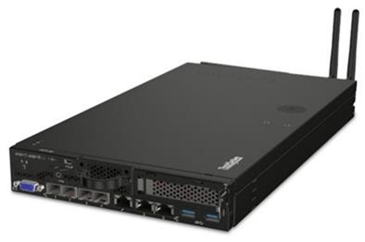
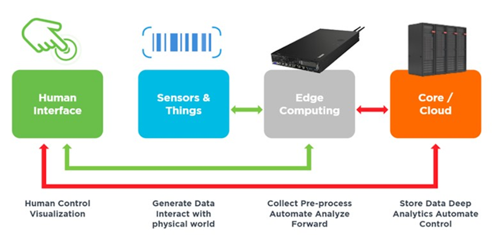

Artificial Intelligence
Artificial Intelligence
Technology overview
 Suggest changes
Suggest changes
NetApp AFF systems
State-of-the-art NetApp AFF storage systems enable AI inference deployments at the edge to meet enterprise storage requirements with industry-leading performance, superior flexibility, cloud integration, and best-in class data management. Designed specifically for flash, NetApp AFF systems help accelerate, manage, and protect business-critical data.
-
Entry-level NetApp AFF storage systems are based on FAS2750 hardware and SSD flash media
-
Two controllers in HA configuration

NetApp entry-level AFF C190 storage systems support the following features:
-
A maximum drive count of 24x 960GB SSDs
-
Two possible configurations:
-
Ethernet (10GbE): 4x 10GBASE-T (RJ-45) ports
-
Unified (16Gb FC or 10GbE): 4x unified target adapter 2 (UTA2) ports
-
-
A maximum of 50.5TB effective capacity

For NAS workloads, a single entry-level AFF C190 system supports throughput of 4.4GBps for sequential reads and 230K IOPS for small random reads at latencies of 1ms or less.
NetApp AFF A220
NetApp also offers other entry-level storage systems that provide higher performance and scalability for larger-scale deployments. For NAS workloads, a single entry-level AFF A220 system supports:
-
Throughput of 6.2GBps for sequential reads
-
375K IOPS for small random reads at latencies of 1ms or less
-
Maximum drive count of 144x 960GB, 3.8TB, or 7.6TB SSDs
-
AFF A220 scales to larger than 1PB of effective capacity
NetApp AFF A250
-
Maximum effective capacity is 35PB with maximum scale out 2-24 nodes (12 HA pairs)
-
Provides ≥ 45% performance increase over AFF A220
-
440k IOPS random reads @1ms
-
Built on the latest NetApp ONTAP release: ONTAP 9.8
-
Leverages two 25Gb Ethernet for HA and cluster interconnect
NetApp E-Series EF Systems
The EF-Series is a family of entry-level and mid-range all-flash SAN storage arrays that can accelerate access to your data and help you derive value from it faster with NetApp SANtricity software. These systems offer both SAS and NVMe flash storage and provide you with affordable to extreme IOPS, response times under 100 microseconds, and bandwidth up to 44GBps—making them ideal for mixed workloads and demanding applications such as AI inferencing and high-performance computing (HPC).
The following figure shows the NetApp EF280 storage system.

NetApp EF280
-
32Gb/16Gb FC, 25Gb/10Gb iSCSI, and 12Gb SAS support
-
Maximum effective capacity is 96 drives totaling 1.5PB
-
Throughput of 10GBps (sequential reads)
-
300K IOPs (random reads)
-
The NetApp EF280 is the lowest cost all-flash array (AFA) in the NetApp portfolio
NetApp EF300
-
24x NVMe SSD drives for a total capacity of 367TB
-
Expansion options totaling 240x NL-SAS HDDs, 96x SAS SSDs, or a combination
-
100Gb NVMe/IB, NVMe/RoCE, iSER/IB, and SRP/IB
-
32Gb NVME/FC, FCP
-
25Gb iSCSI
-
20GBps (sequential reads)
-
670K IOPs (random reads)
|
|
For more information, see the NetApp EF-Series NetApp EF-Series all-flash arrays EF600, F300, EF570, and EF280 datasheet. |
NetApp ONTAP 9
ONTAP 9.8.1, the latest generation of storage management software from NetApp, enables businesses to modernize infrastructure and transition to a cloud-ready data center. Leveraging industry-leading data management capabilities, ONTAP enables the management and protection of data with a single set of tools, regardless of where that data resides. You can also move data freely to wherever it is needed: the edge, the core, or the cloud. ONTAP 9.8.1 includes numerous features that simplify data management, accelerate and protect critical data, and enable next generation infrastructure capabilities across hybrid cloud architectures.
Simplify data management
Data management is crucial to enterprise IT operations so that appropriate resources are used for applications and datasets. ONTAP includes the following features to streamline and simplify operations and reduce the total cost of operation:
-
Inline data compaction and expanded deduplication. Data compaction reduces wasted space inside storage blocks, and deduplication significantly increases effective capacity. This applies to data stored locally and data tiered to the cloud.
-
Minimum, maximum, and adaptive quality of service (AQoS). Granular quality of service (QoS) controls help maintain performance levels for critical applications in highly shared environments.
-
NetApp FabricPool. This feature provides automatic tiering of cold data to public and private cloud storage options, including Amazon Web Services (AWS), Azure, and NetApp StorageGRID storage solution. For more information about FabricPool, see TR-4598.
Accelerate and protect data
ONTAP 9 delivers superior levels of performance and data protection and extends these capabilities in the following ways:
-
Performance and lower latency. ONTAP offers the highest possible throughput at the lowest possible latency.
-
Data protection. ONTAP provides built-in data protection capabilities with common management across all platforms.
-
NetApp Volume Encryption (NVE). ONTAP offers native volume-level encryption with both onboard and External Key Management support.
-
Multitenancy and multifactor authentication. ONTAP enables sharing of infrastructure resources with the highest levels of security.
Future-proof infrastructure
ONTAP 9 helps meet demanding and constantly changing business needs with the following features:
-
Seamless scaling and nondisruptive operations. ONTAP supports the nondisruptive addition of capacity to existing controllers and to scale-out clusters. Customers can upgrade to the latest technologies, such as NVMe and 32Gb FC, without costly data migrations or outages.
-
Cloud connection. ONTAP is the most cloud-connected storage management software, with options for software-defined storage (ONTAP Select) and cloud-native instances (NetApp Cloud Volumes Service) in all public clouds.
-
Integration with emerging applications. ONTAP offers enterprise-grade data services for next generation platforms and applications, such as autonomous vehicles, smart cities, and Industry 4.0, by using the same infrastructure that supports existing enterprise apps.
NetApp SANtricity
NetApp SANtricity is designed to deliver industry-leading performance, reliability, and simplicity to E-Series hybrid-flash and EF-Series all-flash arrays. Achieve maximum performance and utilization of your E-Series hybrid-flash and EF-Series all-flash arrays for heavy-workload applications, including data analytics, video surveillance, and backup and recovery. With SANtricity, configuration tweaking, maintenance, capacity expansion, and other tasks can be completed while the storage stays online. SANtricity also provides superior data protection, proactive monitoring, and certified security—all accessible through the easy-to-use, on-box System Manager interface. To learn more, see the NetApp E-Series SANtricity Software datasheet.
Performance optimized
Performance-optimized SANtricity software delivers data—with high IOPs, high throughput, and low latency—to all your data analytics, video surveillance, and backup apps. Accelerate performance for high-IOPS, low-latency applications and high-bandwidth, high-throughput applications.
Maximize uptime
Complete all your management tasks while the storage stays online. Tweak configurations, perform maintenance, or expand capacity without disrupting I/O. Realize best-in-class reliability with automated features, online configuration, state-of-the-art Dynamic Disk Pools (DPP) technology, and more.
Rest easy
SANtricity software delivers superior data protection, proactive monitoring, and certified security—all through the easy-to-use, on-box System Manager interface. Simplify storage-management chores. Gain the flexibility you need for advanced tuning of all E-Series storage systems. Manage your NetApp E-Series system—anytime, anywhere. Our on-box, web-based interface streamlines your management workflow.
NetApp Trident
Trident from NetApp is an open-source dynamic storage orchestrator for Docker and Kubernetes that simplifies the creation, management, and consumption of persistent storage. Trident, a Kubernetes native application, runs directly within a Kubernetes cluster. Trident enables customers to seamlessly deploy DL container images onto NetApp storage and provides an enterprise-grade experience for AI container deployments. Kubernetes users (such as ML developers and data scientists) can create, manage, and automate orchestration and cloning to take advantage of NetApp advanced data management capabilities powered by NetApp technology.
NetApp BlueXP Copy and Sync
BlueXP Copy and Sync is a NetApp service for rapid and secure data synchronization. Whether you need to transfer files between on-premises NFS or SMB file shares, NetApp StorageGRID, NetApp ONTAP S3, NetApp Cloud Volumes Service, Azure NetApp Files, Amazon Simple Storage Service (Amazon S3), Amazon Elastic File System (Amazon EFS), Azure Blob, Google Cloud Storage, or IBM Cloud Object Storage, BlueXP Copy and Sync moves the files where you need them quickly and securely. After your data is transferred, it is fully available for use on both source and target. BlueXP Copy and Sync continuously synchronizes the data, based on your predefined schedule, moving only the deltas, so time and money spent on data replication is minimized. BlueXP Copy and Sync is a software as a service (SaaS) tool that is extremely simple to set up and use. Data transfers that are triggered by BlueXP Copy and Sync are carried out by data brokers. You can deploy BlueXP Copy and Sync data brokers in AWS, Azure, Google Cloud Platform, or on-premises.
Lenovo ThinkSystem servers
Lenovo ThinkSystem servers feature innovative hardware, software, and services that solve customers’ challenges today and deliver an evolutionary, fit-for-purpose, modular design approach to address tomorrow’s challenges. These servers capitalize on best-in-class, industry-standard technologies coupled with differentiated Lenovo innovations to provide the greatest possible flexibility in x86 servers.
Key advantages of deploying Lenovo ThinkSystem servers include:
-
Highly scalable, modular designs to grow with your business
-
Industry-leading resilience to save hours of costly unscheduled downtime
-
Fast flash technologies for lower latencies, quicker response times, and smarter data management in real time
In the AI area, Lenovo is taking a practical approach to helping enterprises understand and adopt the benefits of ML and AI for their workloads. Lenovo customers can explore and evaluate Lenovo AI offerings in Lenovo AI Innovation Centers to fully understand the value for their particular use case. To improve time to value, this customer-centric approach gives customers proof of concept for solution development platforms that are ready to use and optimized for AI.
Lenovo ThinkSystem SE350 Edge Server
Edge computing allows data from IoT devices to be analyzed at the edge of the network before being sent to the data center or cloud. The Lenovo ThinkSystem SE350, as shown in the figure below, is designed for the unique requirements for deployment at the edge, with a focus on flexibility, connectivity, security, and remote manageability in a compact ruggedized and environmentally hardened form factor.
Featuring the Intel Xeon D processor with the flexibility to support acceleration for edge AI workloads, the SE350 is purpose-built for addressing the challenge of server deployments in a variety of environments outside the data center.


MLPerf
MLPerf is the industry-leading benchmark suite for evaluating AI performance. It covers many areas of applied AI including image classification, object detection, medical imaging, and natural language processing (NLP). In this validation, we used Inference v0.7 workloads, which is the latest iteration of the MLPerf Inference at the completion of this validation. The MLPerf Inference v0.7 suite includes four new benchmarks for data center and edge systems:
-
BERT. Bi-directional Encoder Representation from Transformers (BERT) fine-tuned for question answering by using the SQuAD dataset.
-
DLRM. Deep Learning Recommendation Model (DLRM) is a personalization and recommendation model that is trained to optimize click-through rates (CTR).
-
3D U-Net. 3D U-Net architecture is trained on the Brain Tumor Segmentation (BraTS) dataset.
-
RNN-T. Recurrent Neural Network Transducer (RNN-T) is an automatic speech recognition (ASR) model that is trained on a subset of LibriSpeech. MLPerf Inference results and code are publicly available and released under Apache license. MLPerf Inference has an Edge division, which supports the following scenarios:
-
Single stream. This scenario mimics systems where responsiveness is a critical factor, such as offline AI queries performed on smartphones. Individual queries are sent to the system and response times are recorded. 90th percentile latency of all the responses is reported as the result.
-
Multistream. This benchmark is for systems that process input from multiple sensors. During the test, queries are sent at a fixed time interval. A QoS constraint (maximum allowed latency) is imposed. The test reports the number of streams that the system can process while meeting the QoS constraint.
-
Offline. This is the simplest scenario covering batch processing applications and the metric is throughput in samples per second. All data is available to the system and the benchmark measures the time it takes to process all the samples.
Lenovo has published MLPerf Inference scores for SE350 with T4, the server used in this document. See the results at https://mlperf.org/inference-results-0-7/ in the “Edge, Closed Division” section in entry #0.7-145.